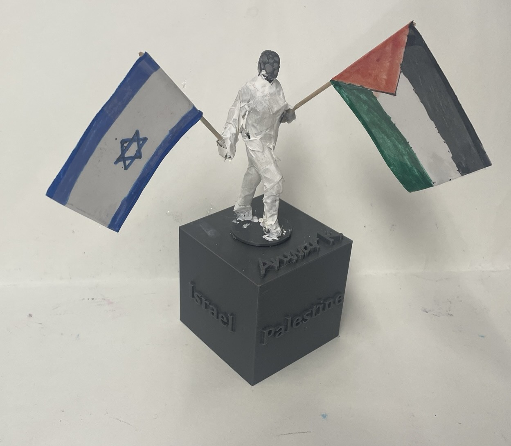

I made this for art in eighth grade. It is a figure holding Israeli and Palestinian flags on the same base. The idea was to express a desire for peace.
Eighth-grade art · photographed June 9, 2023
Eighth-grade art project
A small installation I made in eighth grade.
